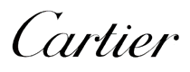

까르띠에 Cartier
까르띠에(Cartier)는 1847년 파리에서 설립된 프랑스 럭셔리 주얼리·시계 메종이다.
최종 업데이트

까르띠에는 어떤 브랜드인가
까르띠에는 1847년 루이 프랑수아 까르띠에가 파리에서 스승의 공방을 인수하며 출발한 프랑스 주얼리·시계 메종이다. 19세기 후반 유럽 왕실과 귀족을 단골로 두며 '왕의 보석상, 보석상의 왕'이라는 별칭을 얻었고, 오늘날 스위스 리치몬트(Richemont) 그룹 산하에서 주얼리 부문을 이끄는 간판 브랜드로 자리한다.
러브 브레이슬릿과 탱크 시계로 대표되는 디자인 유산, 팬더 상징, 강렬한 빨강 케이스가 브랜드를 압축한다.
까르띠에는 어떻게 봐야 할까
경쟁의 핵심은 티파니, 반클리프 아펠과의 분명한 결이다. 자연 모티프(클로버·꽃)에 집중하는 반클리프, 미니멀 모던을 내세우는 티파니와 달리 까르띠에는 기하학적이고 건축적인 선과 아이코닉 디자인 자산이 강점이다.
1847년 이래 축적한 러브, 주스트 앵 클루, 탱크, 산토스는 중고 시장에서도 가치 유지력이 가장 높은 품목으로 꼽혀 자산성과 상징성을 동시에 갖춘다. 리치몬트 주얼리 부문 매출의 절반 이상을 책임지는 중심 축이며, 블룸버그가 'Z세대의 롤렉스'로 부를 만큼 수요가 두텁다.
한국에서는 가방 대신 주얼리·시계로 옮겨가는 소비 흐름, 예물 수요, 스몰 럭셔리 선호가 맞물려 리치몬트코리아의 2024/25 회계연도 매출이 전년 대비 약 19.6% 늘며 견조한 성장을 보였다.
까르띠에는 어떻게 시작되고 성장했나
시작은 1847년 파리, 28세의 루이 프랑수아 까르띠에가 공방을 인수한 순간이다. 1859년 첫 부티크를 열고 제2제정기 사교계의 주문을 받으며 성장했고, 아들 알프레드를 거쳐 파리 보석가의 중심 라 페 거리로 자리를 옮겼다.
손자 루이 까르띠에 대에 이르러 유럽 각국 왕실과 러시아 귀족 고객층을 확보하며 명성이 굳어졌다. 1904년 루이 까르띠에는 비행가 알베르토 산토스 뒤몽을 위해 손목용 산토스 시계를 만들어 손목시계 시대를 열었고, 1917년 탱크가 뒤를 이었다.
1914년에는 팬더 무늬가 처음 등장했으며, 잔 투생이 창작 책임자로서 팬더를 메종의 상징으로 발전시켰다. 1969년 알도 치풀로가 디자인한 러브 브레이슬릿이 나사를 모티프로 등장해 아이콘이 되었고, 이후 까르띠에는 리치몬트 그룹에 편입되어 오늘에 이른다.
까르띠에의 브랜드 아이덴티티는 무엇인가
브랜드의 중심 가치는 장인 정신과 대담한 디자인, 시대를 견디는 지속성이다. 가장 강력한 상징은 팬더로, 우아함과 야성을 동시에 품은 여성상을 표현하며 보석과 시계 전반을 관통한다.
강렬한 빨강 케이스와 금박 레터링은 매장과 포장에서 즉시 식별되는 시각 자산이다. 타깃은 자기 표현과 자산 가치를 함께 추구하는 폭넓은 세대로, 예물 고객부터 첫 명품에 입문하는 2030까지 아우른다.
목소리는 절제되고 품격 있으며, 역사와 헤리티지를 강조하면서도 매 시즌 변주를 더해 동시대성을 잃지 않는다.
까르띠에의 대표 제품과 서비스는 무엇인가
대표 주얼리는 나사 모티프의 러브 브레이슬릿과 못을 형상화한 주스트 앵 클루로, 골드 기본형은 대략 수백만 원대에서 시작해 다이아몬드 사양은 천만 원을 넘는다. 시계는 사각 케이스의 탱크와 산토스가 축으로, 산토스는 스틸 기본형 미화 5천 달러대에서 귀금속·다이아몬드 사양은 5만 달러 이상까지 형성된다.
유통은 직영 부티크와 백화점 매장, 공식 온라인, 정식 면세 채널을 중심으로 운영된다.
까르띠에는 지금 어떤 상태인가
모회사는 스위스에 본사를 둔 리치몬트 그룹이며, 까르띠에 본사는 프랑스 파리에 있다. 리치몬트의 2024 회계연도(3월 마감) 매출은 약 214억 유로, 까르띠에가 속한 주얼리 부문은 약 153억 유로로 전년 대비 약 8% 성장했다.
그룹은 까르띠에 개별 매출을 공개하지 않으나 업계는 주얼리 부문에서 절반 이상, 연 80억 유로를 웃도는 규모로 추정한다. 한국 법인 단위 까르띠에 단독 매출은 미공개다.
까르띠에 연혁 — 주요 사건은 언제였나
까르띠에 로고는 어떻게 변해왔나
대표 로고대표 브랜드 마크 대표 로고 1보관 이미지 1
대표 로고 1보관 이미지 1
BI/CI 아카이브 3보관 이미지 3자주 묻는 질문
까르띠에는 어느 나라 브랜드인가요?
까르띠에는 프랑스의 패션·럭셔리 브랜드입니다.
까르띠에는 언제 설립되었나요?
까르띠에는 1847년 설립되었습니다.
까르띠에의 브랜드 아이덴티티는 무엇인가요?
브랜드의 중심 가치는 장인 정신과 대담한 디자인, 시대를 견디는 지속성이다.
까르띠에의 대표 제품은 무엇인가요?
대표 주얼리는 나사 모티프의 러브 브레이슬릿과 못을 형상화한 주스트 앵 클루로, 골드 기본형은 대략 수백만 원대에서 시작해 다이아몬드 사양은 천만 원을 넘는다.
까르띠에는 현재 어떤 상태인가요?
모회사는 스위스에 본사를 둔 리치몬트 그룹이며, 까르띠에 본사는 프랑스 파리에 있다.
까르띠에의 창업자는 누구인가요?
까르띠에의 창업자는 루이프랑소와 까르띠에입니다(위키데이터 기준).
까르띠에의 본사는 어디에 있나요?
까르띠에의 본사는 cité du Retiro에 있습니다(위키데이터 기준).
출처와 검증
까르띠에 관련 참고: 공식 웹사이트 · 위키데이터 Q538587 · 한국어 위키백과 · 영어 위키백과. 브랜드명은 한글과 원어를 함께 표기하되 데이터에 없는 표기는 만들지 않습니다. 기원 국가·설립연도는 검수된 정의문에서 확인된 값을 우선하고, 없을 때만 공식 웹사이트 URL이 일치하는 위키데이터 개체의 값을 씁니다. 위키데이터 값은 2026-09-07 기준입니다.